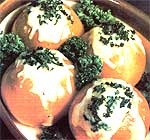

When we Brighten your family breakfast with a dish developed at one of the world's most successful New Age communities . . .
when we visited Scotland's Findhorn Foundation last year to research an article on that community (see "Findhorn: A Bright Light in a Dark World", MOTHER NO. 71, page 32), we were impressed with the bountiful, delicious, and elegant vegetarian meals served there . . . so we picked up a copy of The Findhorn Family Cookbook by Kay Lynne Sherman (Findhorn Publication, 1981, $7.95).
It wasn't easy to select just one sample from the mouthwatering choices . . . but we think the following dish would be a nice N ay to start any day.
First, while the oven preheats to 350°F, grease a baking dish . . . wash 4 large tomatoes . . . cut out their stems and middle sections . . . place them in the dish . . . and salt and pepper them. Now, grate 1/4 cup of Swiss cheese and divide half of it among the scooped-out tomatoes, along with a teaspoon of butter apiece. Next, break an egg into each hollow . . . salt the eggs . . . sprinkle on the remaining cheese . . . top off your creations with a bit of chopped parsley . . . and bake them for 20 to 25 minutes, or until the eggs are set.
Finally, in the wonderful Findhorn tradition, serve the breakfast with love.
EDITOR'S NOTE: Participants in our Visit to Findhorn and Friends tour this coming May (see page 66) will not only enjoy such delightful dishes, but likely learn how to prepare some of them. As well. The Hydra Book Company (Dept. TMEN, P.O. Box 813, Forest Grove, Oregon 97116) will mail you a list of all Find- books and tapes if you'll send o large self-addressed, stamped envelops with your request.
|
 |
|
|